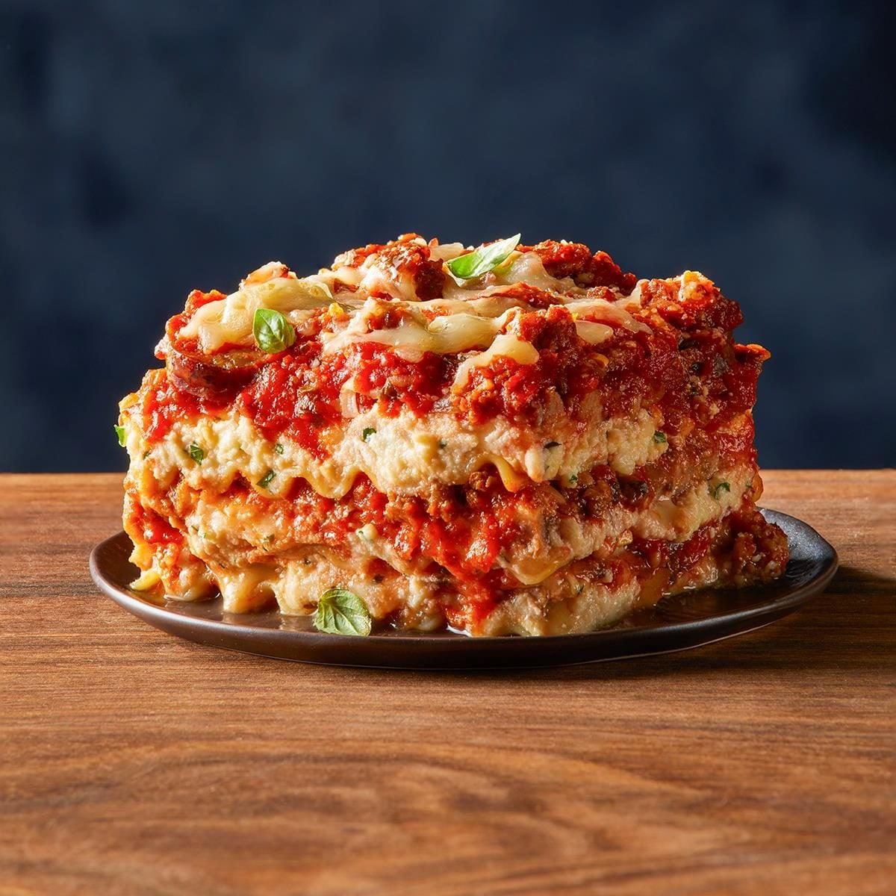

LasagnaLasagna is a classic Italian baked pasta dish made of stacked layers of flat pasta sheets alternating with rich fillings, sauces, and melted cheese.
Originating in Italy during the Middle Ages, it is one of the oldest known pasta dishes and is a staple comfort food worldwide.